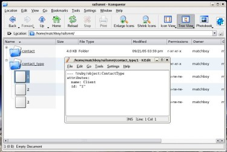

RailsFS After a Couple Minutes of Tooling With Fuse, Whoa #
Hot cats, I’m already in love with FuseFS. And it was only dropped on ruby-talk a bushel of hours ago. See, here’s a script which mounts the ActiveRecord classes in your Rails app as a Linux filesystem.
#!/usr/bin/env ruby
require 'fusefs'
require File.dirname(__FILE__) + '/../config/environment'
class RailsFS < FuseFS::FuseDir
def initialize
@classes = {}
require 'find'
Find.find( File.join(RAILS_ROOT, 'app/models') ) do |model|
if /(\w+)\.rb$/ =~ model
model = $1
kls = Inflector.classify( model )
( @classes[model] = Kernel::const_get( kls ) ).
find :first rescue @classes.delete( model )
end
end
end
def directory? path
tname, key = scan_path path
table = @classes[tname]
if table.nil?; false # /table
elsif key; false # /table/id
else; true end
end
def file? path
tname, key = scan_path path
table = @classes[tname]
key and table and table.find( key )
end
def can_delete?; true end
def can_write? path; file? path end
def contents path
tname, key = scan_path path
table = @classes[tname]
if tname.nil?; @classes.keys.sort # /
else; table.find( :all ).map { |o| o.id.to_s } end # /table
end
def write_to path, body
obj = YAML::load( body )
obj.save
end
def read_file path
tname, key = scan_path path
table = @classes[tname]
YAML::dump( table.find( key ) )
end
end
if (File.basename($0) == File.basename(__FILE__))
root = RailsFS.new
FuseFS.set_root(root)
FuseFS.mount_under(ARGV[0])
FuseFS.run # This doesn't return until we're unmounted.
end
Make sure you have Linux 2.4-2.6, FUSE and Ruby-FuseFS.
Save the above script as script/filesys in your Rails app. (If you’d rather not cut-and-paste the above, it’s here.)
Now, run mkdir ~/railsmnt. Then, script/filesys ~/railsmnt. The rules are as follows:
ls ~/railsmntwill give you a list of tables.ls ~/railsmnt/tablewill list IDs from the table.cat ~/railsmnt/table/idwill display a record in YAML.vim ~/railsmnt/table/idto edit the record in YAML!
See, we got your ObjFSDB right here. Now I dare you to set up an FTP site to let people upload YAML files right into your database. (Thanks to Greg Milliam for his brilliant work, more userspace filesystem ideas here.)
Robby Russell
OMG . I am in love you with right now!
why
Oh, oh, better yet
tar czvf railsapp-yaml.tar.gz ~/railsappto make a tarball of all the data in YAML format.I should allow
.svndirectories to be stored in RailsFS, so you could actually keep versions of your database in Subversion.Robby Russell
_why. Stop it. Please. Just stop it. I want to hurt you now. You are going to make me cry. Stop it! STOP ! :-)
Deirdre
Why, if you did that, I think a lot more people would be in love with you. :)
Jonathan
I just can’t believe it!
This is great stuff!
Robby Russell

Look, I’m browsing my Rails app data in Konqueror.
why
Wait, how do I get the most people in love with me? Please, I just want to make sure I do it exactly right.
netghost
Thanks, just rub it in that I have to use windows here ;)
This looks like it could be really fun stuff.
Robby Russell
I’m pretty sure that the only way to get love now is to build Bootable-RailsOS.
Yes, I demand that you build a linux distro that runs off of Rails tonight. Thanks. :-)
Then…maybe then… you will get some love.
greasygreasy
Gahh!! And me on OS X .
<|:{
HouseHole, hoodwink’d and now this! I hereby nominate _why for the 2006 OSCON /Google hacker of the year award! What will he do next?
HowAbout
For his next trick, _why will make the MouseHole proxy a mountable filesystem which will allow hoodwink’ing from the commandline.
Greg
Aww, sweet! So people are really using it for even neater things than I imagined =).
Of course, as is the nature with bugs, I found quite a few things wrong with it (notably the editor files) today, but that’s in progress.
Thanks for the compliment!
Greg
And for you OS X and Windows users: If it’s at all possible, I’m asking for pointers and ways. I’m getting an OS X pbook eventually, and will try my darnedest to get FuseFS working on there. (Likely not with FUSE itself, but a library that lets me do similar stuff)
Linus Torvalds
You are a god, Greg.
JJ (and not Linus)
Very cool code, and you are a god of Ruby, Greg, but I only can wish I were Linus Torvalds. :-)
Bill Gates
Microsoft Vista will have VistaFS, which will allow you to have transparent Internet Explorer.
Nothing to see here. Move along.
Zippy
OMFG . I just came in my pants.
why
Bill Gates, get off my blog.
Steve Balmer
[hurls chair across room]
God
Get off my turf, Greg. Seriously.
Daniel Berger
random idea #1
rails + fuse + xcruise =every hacker movie from the 1990’s
why
So that was unix on Jurassic Park!!
greasygreasy
Greg:
From what I can glean, Apple recommends in cases like this to skip writing an actual VFS driver, and instead write an NFS server that you can mount from the same machine (this is, apparently, how they implement their FTP filesystem). I can see some obvious performance issues with this, but it would be pretty cross-platform, at the same time.
Does ruby have any NFS libraries we could build off of?
Greg
greasygreasy:
I don’t know of any Ruby libraries to provide NFS service, but does Apple provide any libraries?
I currently have fusefs_lib.so built from fusefs_lib.c and fusefs_fuse.c. I imagine eventually moving most of the FUSE -specific stuff to fusefs_fuse.c and do all the ruby work in fusefs_lib.c
whoisjake
You know, Google is going to BUY you… not your work, not any of your code, but YOU as a person.
<|:{
Google is going to buy us all before this is done. The whole Ruby community lock, stock and barrel. Or perhaps it’ll be a merger and we’ll rename it Roogle, or maybe Googley, or Roogley. The ‘O’s will be Rubys with Matz’ image hovering above on the front page. This thinktank is unstopable; the ideas flowing here are worth $Billions!
greasygreasy: interesting idea. Why not? A cross-platform GreaseMonkey was born here, why not a cross-platform VFS to free the Windows prisoners (and the mostly unshackled OS X users)?
This just in: Google and Micro$oft employees have been ordered to spend 20% of their time reading RedHanded and ruby-talk.
radu
greasygreasy
It was right in front of my face the whole damn time. WebDAV. I’ve got a drop-in replacement for FuseFS about 80% done, using webrick and a modified version of Tatsuki Sugiura’s WebDAV for that cross-platform feel. Greg, I’d love to make it part of FuseFS, if you don’t think it’s out of the scope of the project. I don’t want to tread on your toes.
Reads work perfectly right now without any modification to _why’s code above (except for the parent class). Writes are fine on Windows, but need some work on OS X because Apple took the safe route and won’t allow writing to a WebDAV share without locking the file first, which Sugiura’s code doesn’t support. Yet. I’m workin’ on it.
Is this something people would be interested in?
lorewarden
How about CIFS ? It is fairly well supported across the board.
greasygreasy
lorewarden: WebDAV shares can be mounted on every platform I know of at this point, Windows, Linux, OS X , generic Unix, etc. CIFS would certainly be a good choice as well, but I know of no ruby library for implementing a SMB server.
Greg
greasygreasy: Yeah, I’d love to incorporate it into fusefs. I’ve never used webdav though so I have no idea how that works on windows or OS X . If you want to contact me outside of this blog, just email me: walker@deafcode.com, and I’m sometimes on #ruby-lang as lethalcode. AOL IM and GMail IM of captdeaf on both. We’ll work on putting them together and try for a cross-platform FuseFS. That’d be really sweet.
If it works on Linux too, could even make it drop FUSE if it’s not found and default to webdav (Or drop FUSE altogether, but I think it may be better to keep it around as it’s likely better performance than doing it all over the network.)
rasputnik
I moved to Debian from FreeBSD last month, and this kind of thing was the reason.
Greg and _why, you are terrifying.
jaime
i like your comment format!
WWWWolf
Okay, it’s official: Rails has the permafrost now. Always when you think it can’t get much cooler than it is, people come up with new stuff like this.
Years and years ago, I heard people drooling about things like “cat /dev/tcp/hostname/servicename” being available one day; Lately, people have been buzzing about Reiser4 and how it’s going to Change the World… but looks like user-space stuff is frostier still!
...and then the Plan9 folks come and spoil all the fun. =(
MenTaLguY
Really, in an ideal world we’d have v9fs instead of fuse. But fuse is a close second.
SMB and NFS are both too nasty to bother implementing for user-space filesystems.
JOSEPH
HELLO JOSEPH !!
greasygreasy
MenTaLguY: I agree on SMB and NFS , that’s why I was hoping for a pre-existing ruby library.
ged
WWW Wolf: /dev/tcp/host/port already works under bash. Not nearly as cool as FUSE , but still cool.
Kevin Ballard
Oh man, I wish I could try this out on my OS X system. Greg, get crackin’ and make it work! :D
Joe
I don’t know what you guys are talking about! Seriously. I love the excitement and want to understand—but what!!??
Paul Marsh
After seeing FuseFS yesterday on ruby-forge I was impressed. This is just getting silly now though. I feel like I’m living some web developers dream. :)
naasking
Holy crap, I was just thinking about doing something like this a few weeks ago. Very cool. :-)
riffraff
/me dreams of a ruby/FuseFS compatible api to write namespace shell extensions on win32
vinbarnes
I can’t find much info on user-space filesystems. Anybody have any pointers to articles explaining it and/or reasons for/against? Happy end o’ week!
Zachery
why: from jurassic park it really was a unix box. irix to be exact. and the 3d file system navigator was a real product created by Sun. FSN (File System Navigator) pronounced Fusion im sure was slightly modified for the movie, but it IS what was used:
http://www.sgi.com/fun/freeware/3d_navigator.html
Zachery
has anyone considered an svn mount, and maybe have like ./trunk/somefile/HEAD ./trunk/somefile/
or ./ /trunk/somefile .
;) the random useless shit we can do now !
Zobbo
Too many years ago (18 now) I first started databases with a system called Pick – where the entire file system structure was itself a database and you could do exactly what you are now doing. Edit records through the file system and (vice-versa) query files off the file system using your normal database reporting tools. Now we are back there again. Like it :)
jvoorhis
_why: I should allow .svn directories to be stored in RailsFS, so you could actually keep versions of your database in Subversion.
Or you could just use Darcs in the directory above ;)
wow
neat. really I like it.
chunky bacon
I’m gonna have to learn Ruby and Rails now.
Greg
Hey _why – mind if I stick your railsfs.rb in the samples/ dir for the 0.4 release?
Freaky
Mmmm, this might just be a reason for me to try the new FreeBSD FUSE kernel module. bouncy
OldSchool
Zobbo: I’m STILL progamming in Pick and love it’s simplicity. I haven’t been able to tear myself away. Poked around with (very briefly) java, C, PHP but not until I found Ruby have I found something so streamlined & w/rapid devel capabilities. Just sit down and program! Finally make the move…
RMS
The GNU /Hurd OS has had stuff like this in it since the beginning. Take a look at our notion of translators.
why
Greg: YES YES PLEASE !
Freaky: Does it work??
OldSchool, please post from now on as NewSchool. Thankyou!
RMS, get off my blog!
victor
I can’t wait for this WebDAV thing to have it available on OSX
nornagon
odd, I can’t seem to write files…
bucky
I’ve heard of people using this to mount their samaba shares on fuse and backing it all up on nfs.
SMB for Fuse
With SMB for Fuse you can seamlessly browse your network neighbourhood as were it on your own filesystem.
It’s basically smbmount with a twist. Instead of mounting one Samba share at a time, you mount all workgroups, hosts and shares at once. Only when you’re accessing a share a connection is made to the remote computer.
works on windows
This could easily be done in Windows as well! Windows also has user mode type file system extensions – out of the box! (Google webdrive for instance).
XoloX
Bollocks, now I have to install Linux & Ruby again.
Comments are closed for this entry.